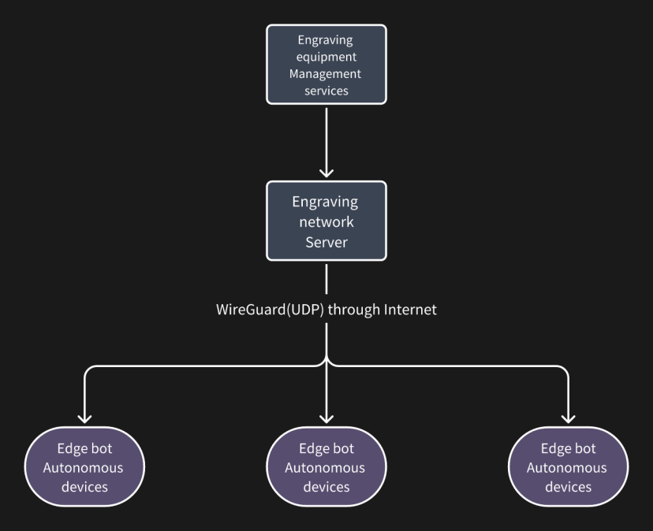
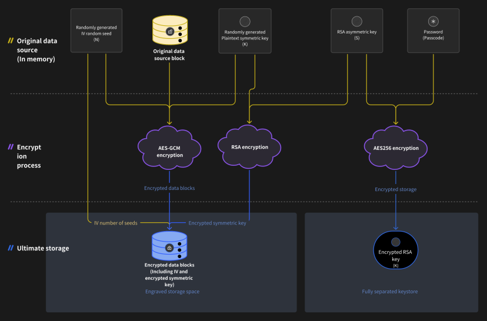

coScene Data Security Solution
The company adopts the following complete data protection plan to ensure data
security
Production environment
Overview
The production environment of coScene is only accessible in the necessary parts
for normal operation. The security of data is guaranteed by the powerful security barrier of Alibaba Cloud Ali
Cloud Aliyun.
Concrete implementation
•
The production environment prepared for users uses an independent Alibaba Cloud
Ali Cloud Aliyun account, with complete Physical Separation. It is not interoperable with the R & D and
pre-release accounts of Kehang and other environments.
•
The environment strictly controls access permissions, and currently only 2
operations personnel with restricted permissions have permission to deploy to the environment for limited
operations.
•
The login operation of this environment has audit records of Alibaba Cloud Ali
Cloud Aliyun, and the operation and maintenance operations of the operation and maintenance personnel can be
reviewed through audit logs.
•
The production environment only has development ports 80 and
443 externally.
￮
Unencrypted communication port 80 will automatically Retargeting the
client to the encrypted port without passing any data
￮
Encrypted communication port 443 is the only way outside the
production environment to communicate with data in the production environment. The following section explains
how this port ensures access security through identity authentication and permission management
Communication encryption
Overview
For the necessary open parts mentioned above for normal operation, all services
of coScene adopt various protection measures such as communication encryption, identity authentication, access
restrictions, operation log audit, etc. This ensures that even in extreme cases where individual users have
problems with their use, the data accessed through the service will not be leaked on a large scale.
Concrete implementation
•
As mentioned above . All services are encrypted through port 443, using
international common TLS1.2 standard encryption.
•
All ensure the use of the world's top enterprise digital certificate provider
DigiCert 's second-level issued CA certificate.
•
When initiating communication, the Client must use DingTalk to authenticate the
user's employee identity. If the employee resigns, the login permission will be automatically
invalidated.
•
Various data access operations can also be reviewed through logs.
•
The data stored by users in coScene can be managed by the administrator
configuration specified by the user to manage the access permissions of employees.
•
coScene employees cannot log in to view user data because they are not in the
user DingTalk group.
Storage encryption
Overview
The user data is encrypted end to end on the engraving platform, even if hackers
break into the production environment protected as described above from the bottom, bypass access restrictions,
and directly obtain data on the object storage medium. Because the data is protected by encryption, the service
is protected in memory. The key, these data are still a pile of ciphertext and cannot be used
Concrete implementation
coScene encrypts all stored data statically. That is, encrypt first and then
upload. All files stored in the coScene platform will be encrypted locally and then uploaded to the object
storage, which can effectively prevent data leakage when the object storage itself is damaged.
Engraved static data encryption uses industry-standard AES-GCM and RSA
encryption algorithms. Simply provide an RSA private key when creating a file system to enable data encryption
for the file system, and provide a private key password through JFS_RSA_PASSPHRASE environment variables. In use, Mount Point is completely transparent to the
application, that is, the encryption and decryption process will not affect the access to the file
system.
coScene uses a one-piece-one-secret encryption protection method for all
uploaded data, so even if hackers obtain the AES key of a single data file through other means, they
still cannot obtain data on a large scale. The above environment variables ensure absolute security by
automatically injecting memory once during deployment.
Engraving equipment networking service
Overview
Combining the years of practical experience of the coScene team in the industry,
we have launched the coScene equipment networking function for the problems of high complexity and difficult
operation and maintenance of autonomous systems, and provided users with a series of operation and maintenance
tools that can greatly improve work efficiency on the basis of the network.

Functional safety practices
Secure private network
Cyber security is guaranteed by the WireGuard protocol. The security process for
the connection and interaction between the Client software and the coScene networking server is as
follows:
1.
The coScene networking client sends a connection request to the networking
server and saves it to the pending client list, using the public key as the identifier.
2.
The administrator displays acceptance of the Client through the webpage or API (if not previously
accepted);
3.
The next client's connection request will receive connection information and the
server's public key as a response.
4.
Client creates a TUN device and establishes a connection with the networking
server.
5.
If SSH access is enabled during setup, the Client will add the server's public
key to the ~/.ssh/authorized_keys ;
6.
After the connection is successfully established, the Client will periodically
send heartbeats to the server through the secure Virtual Private Cloud. If a disconnection is detected, the
Client will restart this process starting from step 1.
Secure Web Console
Administrator users can create a secure Web Console for any Client with SSH
access enabled. Its working principle is as follows:
1.
Administrator requests access to the client's Web Console
2.
The networking server level generates a ttyd process that runs SSH commands
using the server's private key to connect to the client.
3.
The networking server creates a temporary reverse proxy and generates a
confidential temporary URL pointing to the websocket node of ttyd
4.
The administrator accesses the Web Console through the networking server to
achieve command-line interaction similar to SSH
Since ttyd supports the ZMODEM File Transfer Protocol, users can use tools such
as https://trzsz.github.io to download / upload files while using the encrypted Web Console. TRZSZ
will be pre-installed with the networking service of coScene. The current Web Console relies on SSH access, and
coScene also supports running the embedded Rust version of ttyd inside the Client for higher security
considerations.
Appendix:
Encryption principle
A static encryption scheme that combines symmetric and asymmetric encryption
requires the user to create a global RSA private key M for the file system in advance. Each object stored in the object storage will
have its own random symmetric key S. Data is encrypted with AES-GCM using the symmetric key S , S is encrypted with the global RSA private key M , and the RSA private key is encrypted using the password specified by the
user.
Symbol description:
•
M represents the master key: RSA private key
•
S represents the 256-bit symmetric key generated by the Client for each file
object
•
N represents the random seed generated by the Client for each file
object
•
K represents M encrypt S to get the ciphertext

Data encryption process
•
Data blocks are compressed using LZ4 or ZStandard before being written to object
storage.
•
Generate a random 256-bit symmetric key S and a random seed N for each data block.
•
Based on AES-GCM using S and N to encrypt each data block is encrypted_data .
•
In order to avoid the symmetric key S on the network plaintext transmission , using the RSA private key M to encrypt the symmetric key S to obtain the ciphertext K .
•
The encrypted data encrypted_data , ciphertext K and random seed N are combined into an object, and then written to the object storage.
Data decryption process
•
Read the entire encrypted object (it may be a bit larger than 4MB).
•
Object data parsing ciphertext K , random seed N and the encrypted data encrypted_data .
•
Decrypt K with the RSA private key to obtain the symmetric key S.
•
Based on AES-GCM using S and N decrypt data encrypted_data get data block plaintext.
•
Decompress the data block.